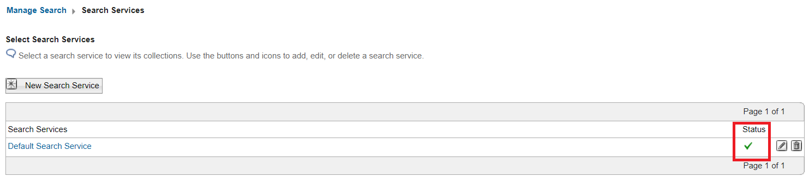

How to use DX Search and the DX Search Center
Applies to
HCL Digital Experience v9.5 and higher
Introduction
HCL Digital Experience (DX) includes different kinds of search features that can be used to find documents such as the Search Center. In this article, you will learn how to use DX Search and the DX Search Center to find documents used in HCL DX. You will also learn how to configure Web Content Management (WCM) documents to be more easily searched using the service by defining metadata.
Instructions
This article is structured as a workflow sample that include different parts:
- A sample user is created in HCL DX.
- A WCM document is created with the author set as the sample user.
- Additional metadata is such as keywords, name, and title added to that document.
- The Search Center is used to find the created WCM document using different search-filters such as title or author.
Step 1: Create a sample user in HCL DX
-
Log in to HCL DX as the Portal administrator (wpsadmin).
-
Navigate to Security > Users and Groups.
-
Click New User.
-
Create a new user with the last name Test User 1 then click OK.
Step 2: Create a sample document that contains metadata
-
Go to Applications Menu > Web Content > Authoring.
-
Click New > Content > Select from all Content Templates....

-
On the New Content window, navigate to Web Content
-
Select the Article content template then click OK.

-
Enter the following details:
- Name:
MyTestArticle - Display title:
MyTitle - Description:
MyDescription

- Name:
-
Under the Properties tab, click Show Hidden Fields.
-
Click Add Authors and select Test User 1.
-
In the Profile dropdown, you can add specific Keywords that can be used as a filter to find the page. For this example, add
mykeyword.
-
Click Save and Close.
Step 3: Check the configuration settings of the Classic Search feature
-
Go to Applications Menu > Search.
-
On the Manage Search page, there are three sections: Search Services, Search Collections and Search Scopes.
-
Search Services:
A search service is needed to create Collections. It can be a remote search service or a local one. The local one is already pre-configured, when the product is installed. -
Search Collections:
The search service crawls and indexes documents and stores them in a collection. A search collection contains a number of content sources that the portal search service indexes. When creating a new collection, the content sources you specify will decide where the fetching starts and stops. -
Search Scopes:
A search scope allows you to partition or organize your search collections. As a result, your site visitors can limit their search to specific areas. Defined scopes are visible to visitors from the search dialog. For more information, refer to:
Click on Search Service and check the status of the service. You should see a green check mark icon. If you see a red X icon, it indicates that your search service is not working. You will need to review the configuration settings of your search service. For more information, refer to Search service configuration parameters

-
Step 4: (Optional) Optimize the Search Service to use AND operator for searches
When a user enters more than one search term, the HCL DX search engine applies a logical OR operator by default. For a document to qualify for the search result list, only one of those terms needs to be included. However, including two or more words leads to better search results.
-
In the Select Search Service section, click the Pencil icon to modify the search service.

-
Ensure that the value of the
DEFAULT_SEARCH_OPERATORparameter is set toAND.
If the parameter is not set:
- Enter the following details:
- Parameter key:
DEFAULT_SEARCH_OPERATOR - New parameter value:
AND
- Parameter key:
- Click Add Parameter.
- Click OK to save your changes.
For more information, refer to Changing the default query operator from 'OR' to 'AND'.
- Enter the following details:
Step 5: (Optional) Optimize your search by applying the boost factors to specific metadata fields
In the Search Service Configuration page, you can also tune some settings to further optimize searches. In this sample, the boostingSettings parameter is configured:
- Enter the following details:
- Parameter key:
boostingSettings - New parameter value:
{"phraseBoost": {"Enabled":"true"}, "fieldBoost": [{"field":"title", "boost": 3.0} , {"field":"description", "boost":3.0}, {"field":"keywords", "boost":2.0}]}
- Parameter key:
- Click Add Parameter.
- Click OK to save your changes.
This parameter increases the search weight of the title and description fields over keywords.
For more information, refer to Applying boost factors to specific fields (metadata).
Step 6: (Optional) Configuring search by metadata for the Search Center portlet
By default, the meta elements title, keywords, and description of documents are provided as search filters. The actual set of available meta elements depends on the types of content sources that are indexed. It is possible to add your own custom metadata search filters.
For more information, refer to Configuring search by metadata for the Search Center portlet.
Step 7: Search for documents using the Search Center portlet
-
Log in to HCL DX as the Portal administrator (wpsadmin).
-
Go to Applications Menu > Search.
-
Click Search Collections and check if there are documents listed. In the following sample, the Default Search Collection has 465 documents and the JCRCollection1 has 1689 documents indexed.

-
Click Default Search Collection. You will find two content sources: WCM Content Source and Portal Content Source.
-
Because you created a new WCM Document under the WCM Content Source, you need to update the index of that collection:
- Click the Start Crawler WCM Content Source icon and check the status. The status should changed from Idle to Running.
- Click Refresh to verify the current status. The crawler is finished when the status reverts to Idle.
- If metadata information of documents are changed, you may need to regather all documents. Click Regather all content from Content Source to re-index all documents of that specified content source.

-
You can find the number of changed documents under the Documents column. It will still show 0 in the column since you have not run the crawler yet. Click Start Crawler to update the number of documents under WCM Content Source with the WCM document you created in Step 2.
Step 8: Use the Search Center to search for the newly created document
-
Go to Applications Menu > Search.
-
Click Search Collections
-
Click Search and Browse the Collection for Default Search Collections.

-
Click Advanced Search and enter the following details:
- Under Search in:, select Author.
-
Under Search for:, enter Test User 1.
If you have created another user name or added any other user as Author in your newly created document, choose that user.
-
Hit Enter to search for the document. The following result should be shown:

Based on the defined metadata and the search filters that belong to them, the exact document can be found. Since the
DEFAULT_SEARCH_OPERATORvalue has been changed toAND, only results that match both metadata information will be shown. -
Run some further tests and check the result of the different filters (for example, searching for the title, keyword, author, or mixing other metadata as a filters).
You should be able find the document as soon as the metadata filter value matches the value of the metadata mentioned in the article.
- If you cannot find a specific keyword when scanning the entire document, try searching for keywords that are part of the
BODYtag in your documents. - You can specify your own metadata fields.
For more information, refer to Configuring search by metadata for the Search Center Portlet.
- If you cannot find a specific keyword when scanning the entire document, try searching for keywords that are part of the
Note
- You can also use DX Search through the DX Search REST API and Search REST API specification.
- For troubleshooting tips, refer to Troubleshooting Remote Search, Collection and search issues.